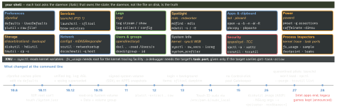

macos · folio
In one line: Most macOS admin commands are thin clients of a daemon that owns and caches
the state — so change it through the tool, name the domain (prefs domain,
launchd gui/<uid>, log subsystem), and expect SIP, TCC and the
sealed system volume to refuse even root.
Download PDF Print view LaTeX source


defaults — preferences through cfprefsd
- Domain = bundle id;
-g=NSGlobalDomain(every app);-currentHost= this host only. A file path as domain: slated to go. - No type flag ⇒ string:
-bool -int -float -date -data -array(-add) -dict(-add); check withread-type.find <word>·export <dom> -(XML) ·delete-all(every container). - Since 10.8 cfprefsd caches and writes asynchronously: a hand-edited plist “will not necessarily be read, and may even be overwritten”.
launchctl — verbs on domain targets (U=$(id -u))
| want | modern | legacy |
|---|---|---|
| load | bootstrap gui/$U ~/Library/LaunchAgents/x.plist | load |
| unload | bootout gui/$U/com.example.x | unload |
| restart | kickstart -k -p gui/$U/com.example.x (-p: pid) | — |
| inspect | print gui/$U/… · blame (why it was launched) | list |
| keep off | disable gui/$U/… — persists across boots | -w |
system/(anyone reads, root modifies) ·user/<uid>/(exists without a login) ·gui/<uid>/(the login session: agents) ·login/<asid>/·pid/<pid>/(the XPC services it can reach). Legacy verbs pick the domain by whether you are root.- Relative
ProgramArguments[0]resolves via_PATH_STDPATH=/usr/bin:/bin:/usr/sbin:/sbin, not yourPATH; neverdaemon(3)/ fork + exit. - Background items (13+):
sfltool dumpbtmlists,resetbtmresets.brew services=~/Library/LaunchAgents(sudo:/Library/LaunchDaemons).
log — the unified log (10.12+)
log stream --level debug= live (debug ⊃ info ⊃ default) ·log show --last 1h= stored, default level unless--info --debug·--last boot·--style compact|json|ndjson.- Keys:
subsystem,category(with subsystem),process,sender(the library),messageType(default info debug error fault),eventMessage CONTAINS[c] "x".~/.logrc: default options + predicate aliases. - Persist debug for one subsystem:
sudo log config --subsystem com.example.app --mode "level:debug,persist:debug"(--status,--reset). sudo log collect --last 30m --output x.logarchive(--device: a paired device); store =/var/db/diagnostics. 27.0 archives need 26.2+ to read.<private>lifts only viaOSLogPreferences(Info.plist) or acom.apple.system.loggingprofile (Enable-Private-Data) — on a throwaway Mac.
Spotlight · open · clipboard
mdfind 'kMDItemCFBundleIdentifier == "com.example.app"'— every copy (stale builds);-onlyin <dir>-name-live-0.mdls -name kMDItemWhereFroms f= download URL.sudo mdutil -E /rebuilds,-sstatus.open -a Xcode .·-b <id>·-nnew instance ·-Wwait ·-Rreveal ·-jhidden ·-Fno restore ·--env K=V·--args ….pbpaste | jq . | pbcopy;-pboard find. Without a UTF-8LANGthe C encoding is used — non-ASCII mangles.
Power — assertions held by powerd
| caffeinate | assertion (pmset -g assertions) | note |
|---|---|---|
-i | PreventUserIdleSystemSleep | default, no flag |
-d | PreventUserIdleDisplaySleep | display |
-s | PreventSystemSleep | AC power only |
-m / -u | disk idle / “user is active” | -u: 5 s unless -t |
caffeinate -i make holds it while make runs, -w <pid> until that pid exits. pmset -g log (sleep/wake history) · -g therm · -g sched; settings per source: -b battery -c charger -u UPS -a all; pmset sleepnow.
Storage — APFS
- A container shares free space among its volumes. macOS = a volume group: System (read-only 10.15, signed + sealed 11) + Data, joined by firmlinks.
- Snapshot = read-only copy of a volume.
tmutil localsnapshot·listlocalsnapshots /·deletelocalsnapshots <date>·thinlocalsnapshots /;diskutil apfs listSnapshots /. cp -c=clonefile(2), copy-on-write.diskutil image create(26) writes ASIF, which replaces.sparseimage.
Network, DNS, users
scutil --dns · --proxy | resolver + proxy config (configd) |
scutil --get LocalHostName | also ComputerName, HostName |
/etc/resolver/<domain> | per-domain DNS; resolv.conf is generated |
networksetup -setdnsservers Wi-Fi 9.9.9.9 | per service; empty clears |
networksetup -listallhardwareports | service name ↔ en0 |
dscacheutil -q host -a name example.com | system lookup; -flushcache |
dscl . -list /Users UniqueID | local directory node |
dseditgroup -o checkmember -m x admin | group membership |
Gatekeeper, quarantine, SIP, TCC
spctl -a -vv -t execute App.app(installa.pkg,opena document): exit 0 ok · 1 failed · 2 bad args · 3 denied.--global-disableonly reveals “Anywhere” in Privacy & Security.- Quarantine = xattr
com.apple.quarantine(not API): Safari sets it, Archive Utility propagates it;curl/scpdon’t set it,tar/unzipdon’t propagate.xattr -d com.apple.quarantine f·-r·-c(all). - SIP guards
/System /usr /bin /sbin /var— not/usr/local,/Applications,/Library.csrutil status(not an API); disable only in Recovery. tccutil reset AddressBook [bundle-id]re-prompts; 27:tccutil list(managed Macs); apps can no longer read the TCC database.
System info, Rosetta, sudo, Homebrew
sw_vers --productVersion·--buildVersion·--productVersionExtra(Rapid Security Response).sysctl hw.nperflevels,hw.perflevel0.physicalcpu(0 = fastest cores),hw.memsize;sysctl.proc_translated1 = under Rosetta.softwareupdate --install-rosetta: Rosetta stays general-purpose through 27, is not restored by the upgrade;sudo nvram boot-args="nox86exec=1"(26) makes x86 code crash — proof you no longer need it.- Touch ID
sudo:/etc/pam.d/sudo_local(14+, fromsudo_local.template) survives updates. - Homebrew:
/opt/homebrew, nosudoafter install; macOS 15+, Intel = Tier 3 (Oct 2026).brew bundle dump→Brewfile.
Process inspectors
sample <pid> — all threads’ stacks, 10 s at 1 ms · spindump — the report of a force-quit hang · sudo fs_usage -w -f filesys <proc> · footprint — dirty memory, phys_footprint = kernel ledger · vmmap --summary · heap · leaks --atExit -- ./tool: exit 0 clean, 1 leaks (a CI gate); reads Xcode .memgraph files too.
Traps
bootstrapprints each failing path with its error;launchctl error 5decodes the number. On 27 a downloaded (quarantined) plist won’t load:xattr -dit.networksetupwants the service ("Wi-Fi"), not the device (en0).leaks/vmmapon a distribution build: no task port(unverified) — Xcode addsget-task-allowonly when building for debugging.